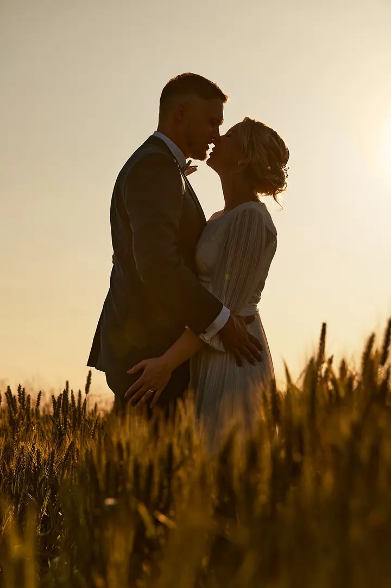
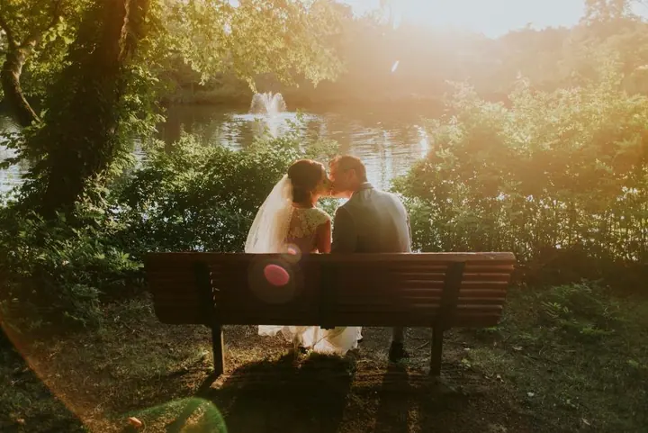
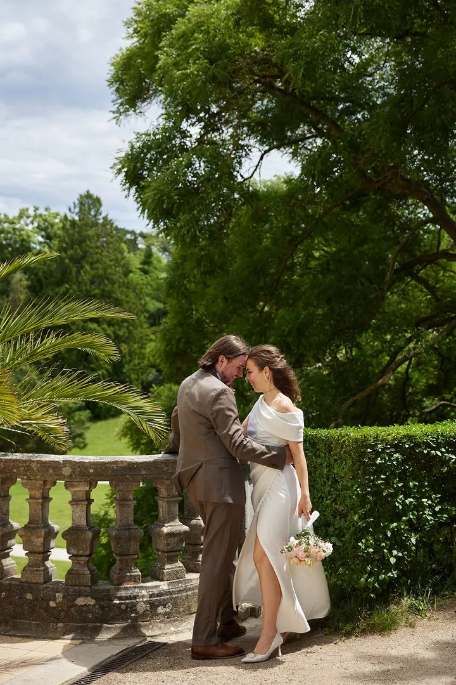
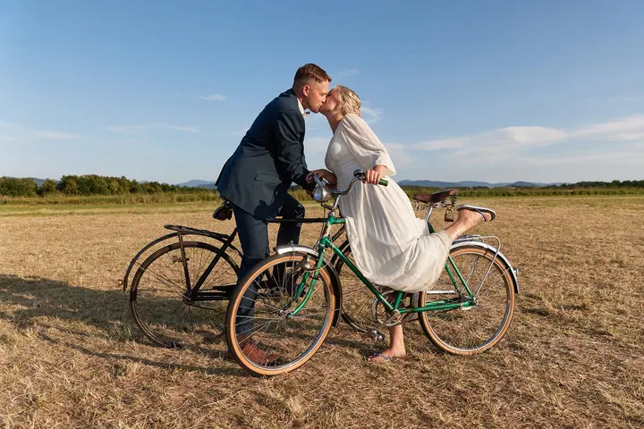

jedna
Svatební focení
Průběh dne fotím reportážním stylem, nenápadně a s pozorností k detailům. Párovému focení věnuji zvláštní péči už od výběru lokací.

Svatební a portrétní fotograf · Ostrava, Moravskoslezský kraj, celá Česká republika

Jmenuji se Ladislav Mácha a už přes 15 let fotím svatby v Ostravě, v Moravskoslezském kraji i jinde po republice. Ve svém ateliéru na zámku ve Staré Vsi nad Ondřejnicí fotím také portréty a rodiny. Záleží mi na tom, abyste se při focení cítili uvolněně a na fotkách se pak poznali.
Více o mně
Co fotím
jedna
Průběh dne fotím reportážním stylem, nenápadně a s pozorností k detailům. Párovému focení věnuji zvláštní péči už od výběru lokací.
Profesní a business portréty, ženský a mužský portrét i glamour & beauty. Fotit můžeme ve vlastním ateliéru na zámku ve Staré Vsi nad Ondřejnicí.
Rodinné portréty a důležité momenty, které si vždy rádi připomenete. Těhotenské fotky vytvoříme v přírodě, u vás doma nebo u mě v ateliéru.
Fotím společenské události, plesy, taneční soutěže a firemní akce.

Bez nucených póz, prostě vy dva.


Za objektivem
Jsem profesionální fotograf z Ostravska a fotografování je pro mě vášní už téměř 20 let. Miluji zachycování emocí, hry světla a neopakovatelných momentů, které dávají každé fotografii vlastní příběh.
Svůj fotoateliér provozuji v malebném renesančním zámku ve Staré Vsi nad Ondřejnicí, jen pár kilometrů od Ostravy. Za klienty ale rád cestuji po celé České republice.
Vím, že krásné fotky nevznikají jen stisknutím spouště. Jsou výsledkem pohody, přirozenosti a radosti. Proto se snažím, aby pro vás bylo focení příjemným zážitkem bez zbytečného stresu.
Ladislav
Napište mi datum a místo svatby a pár slov o vás. Termín pro vás zarezervuji po uhrazení zálohy 3 000 Kč na základě zálohové faktury.
Dopředu spolu probereme vaše představy, přání i harmonogram dne, osobně, telefonicky nebo e-mailem. Díky tomu pak vše proběhne hladce.
Průběh dne fotím reportážním stylem a nenápadně. Při párovém focení vás přirozeně navedu, bez nucených póz a aranžování.
Obdržíte upravené fotografie v elektronické podobě, podle balíčku zhruba 150 až 800 a více kusů. Po dohodě můžete přiobjednat i tisk.
Portfolio
Otázky
Obřad a portréty (2 hodiny) stojí 6 900 Kč, svatební den na 8 hodin 15 900 Kč a 12hodinový „komplet“ 19 500 Kč. Pokud vám žádný balíček přesně nesedí, napište mi a cenovou nabídku vám obratem pošlu.
Ano, svatby fotím po celé republice. Doprava v rámci Moravskoslezského kraje je v ceně, cenu za focení mimo kraj vám obratem zašlu.
Od května do září lze balíček Obřad a portréty objednat jen pro svatby ve všední dny, tedy od pondělí do pátku.
Pro většinu párů je to první zkušenost. Přirozeně vás navedu, abyste se cítili uvolněně, a obejdeme se bez nucených póz.
Napište pár vět o tom, co si představujete. · +420 739 853 201